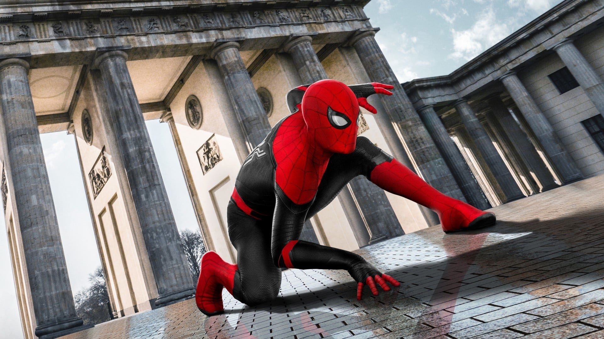

A bite from a spider somehow granted teenager Peter Parker its arachnid abilities and instead of using them for personal gain, he decided to help others with them. An orphan living with his aunt, May Parker, the boy chose to wear a mask while fighting crime so as not to burden her with his actions.
Calling himself Spider-Man and sporting a pair of web-shooting devices he’d constructed, Parker wound up in internet videos which attracted the attention of Tony Stark. The billionaire industrialist deduced Spider-Man’s secret identity and approached Parker at his and May’s home in Queens, New York with a request for aid from the hero in an upcoming confrontation with Captain America and a group of other rogue Avengers and associates. Parker was initially hesitant to even admit his secret career as Spider-Man, but the thrill of adventure and Stark’s talk of responsibility drew him in and he accepted the invitation, as well as a new, high-tech costume and web-shooters.
Peter Parker has many amazing friends. Few of them are :